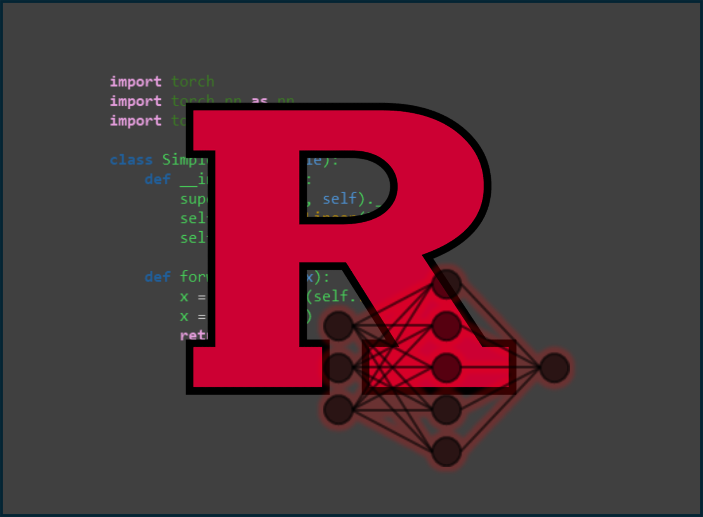
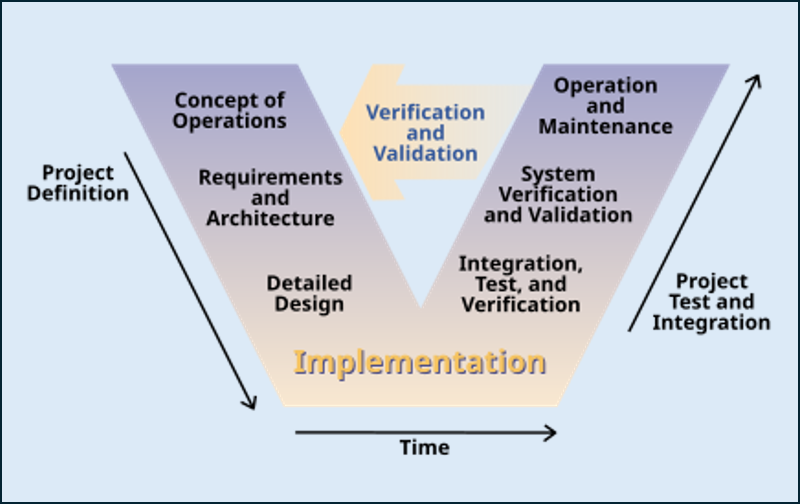
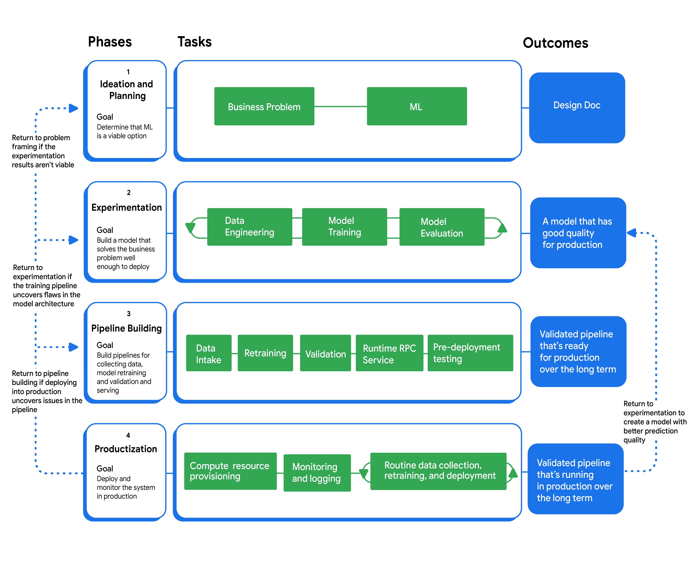
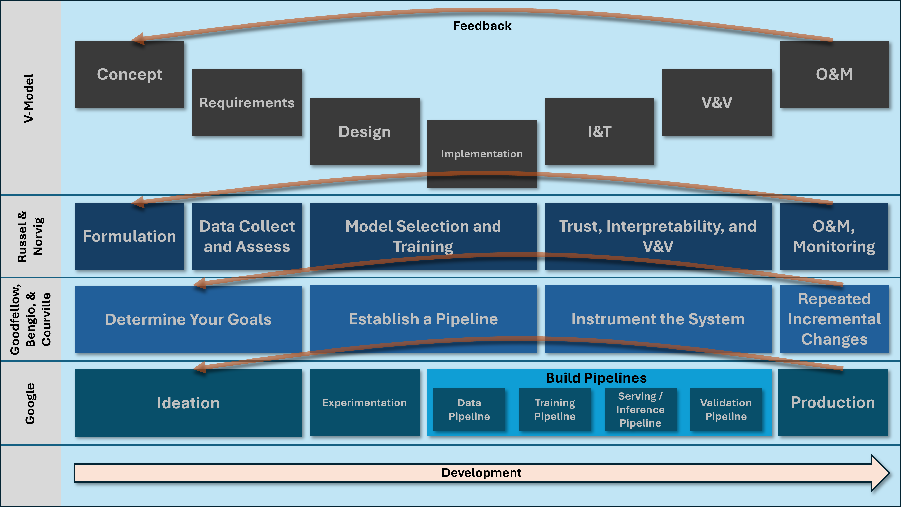
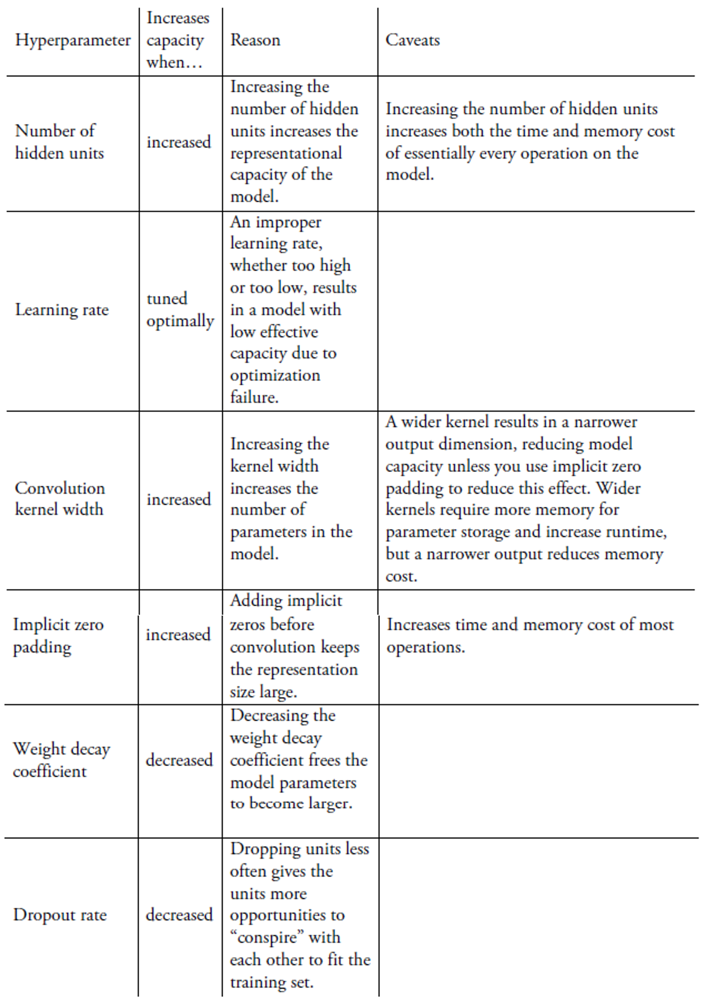

<!doctype html>
<html lang="en">

<head>
	<meta charset="utf-8">

	<title>reveal.js - Markdown Example</title>

	<link rel="stylesheet" href="./dist/reveal.css">
	<link rel="stylesheet" href="./dist/theme/black.css" id="theme">

	<link rel="stylesheet" href="./plugin/highlight/monokai.css">
</head>

<body>

	<div class="reveal">

		<div class="slides">

			<!-- Slides are separated by three dashes (the default) -->
			<section data-markdown data-separator="^\n----\n$" data-separator-vertical="^\n--\n$">
				<script type="text/template">
					## Class 7: Formulating an AI Project
					---
					

					----

					## References
					---

					* Artificial Intelligence: A Modern Approach (Russell and Norvig)
					* Deep Learning (Goodfellow, Bengio, Courville)
					* The Art of Doing Science and Engineering (Hamming)
					* Google guide to <a href="https://developers.google.com/machine-learning/managing-ml-projects/">Managing ML Projects</a>


					----

					## Outline
					---

					* Methods of formulating AI Projects
						* V-model
						* Russell and Norvig
						* Goodfellow *et al.*
						* Google

					--

					* Concept formulation and requirements specification practices
					* Building / staffing an AI project team
					* Budgeting for an AI project
					* Design and implementation practices: model selection, training, experimentation, pipeline development

					--

					* Integration and test (I&T), verification and validation (V&V), instrumentation practices
					* Operations and maintenance (O&M), production and feedback looping

					----

					# Methods of Formulating AI Projects

					----

					## V-Model
					---

					
					<a href="https://en.wikipedia.org/wiki/V-model#/media/File:Systems_Engineering_Process_II.svg">https://en.wikipedia.org/wiki/V-model#/media/File:Systems_Engineering_Process_II.svg</a>

					--

					* Common and often required in US government projects
					* Intended to minimize complex project cost, schedule and technical risk
					* Validation: did we *build the right system*?
					* Verification: did we *built the system right*?

					----

					## Russel and Norvig
					---

					* Problem Formulation: *"what problem do I want to solve for my users?"*

					--

					* Data collection, assessment, and management
						* Do you have enough data? Do you understand its provenance?
						* Feature engineering
						* Exploratory data analysis (EDA)

					--

					* Model selection and training
						* e.g., neural network vs. random forest?
						* Receiver Operating Characteristic (ROC) curves

					--

					* Trust, interpretability, and explainability
						* Source control, testing, review, monitoring, accountability
						* Interpretability: inspect the *model* to determine why a particular input caused an output?
						* Explainability: the model can be a black-box but *other processes* (integrated gradients) explain what it is doing

					--

					* Operation, monitoring, and maintenance
						* Strict requirement
						* Long tail problem
						* Non-stationarity problem

					----

					## Goodfellow
					---

					* Determine your goals
						* What error metric to use with what target value?
					* Establish a working end-to-end pipeline as soon as possible
						* Include data, training, and estimation of performance metrics

					--

					* Instrument the system
						* Determine bottlenecks and diagnose which components are performing poorly
					* Repeatedly make incremental changes
						* Adjust data, hyperparameters, or algorithms based on findings

					----

					## Google
					---
					

					--

					* Ideation and planning
						* Determine if ML is the right solution and what metrics it must meet
					* Experimentation
						* Develop a high performing model that solves the problem
					* Pipeline building
						* Implement infrastructure to scale, monitor, and maintain models in production
					* Productionization
						* Deploy and monitor the system

					----

					## Superposition of processes
					---

					

					--

					* Mostly following same flow and best practices
					* Some differences in how the boundaries of the steps are specified
					* Be sure to clarify these boundaries when working on a team

					----

					# Concept Formulation and Requirements

					*"Should you use AI for this? How well does it need to perform? What is the definition of good?"*

					----

					## Wisdom: Hamming
					---

					*"Neural nets...can learn to get results when you give them a series of inputs and acceptable outputs, without ever having to say how to produce the results. They can classify objects into classes which are reasonable without ever being told what classes are to be used or found. They learn with simple feedback which uses the information that the result computed from an input is not acceptable. In a way they represent a solution to "the programming problem" -- once they are built they are really not programmed at all, but still they can solve a wide variety of problems satisfactorily."*

					----

					## Hamming on Science vs. Engineering
					---

					* Science: if you know what you're doing you shouldn't be doing it
					* Engineering: if you *don't* know what you're doing you shouldn't be doing it

					----

					## Hamming on Systems Engineering
					---

					1. If you optimize the components you will probably ruin the system performance
					2. Part of systems engineering design is to prepare for changes so they can be gracefully made and still not degrade the other parts.
					3. The closer you meet specifications, the worse performance will be when overloaded.

					----

					## Russell and Norvig: Problem Formulation
					---

					* *"What problem do you want to solve?"*
						- *"What problem do I want to solve for my users?"*
						- *"Which parts of the problem can be best solved by machine learning?"*

					--

					* What type of machine learning is required?
						- Unsupervised, Supervised, or Reinforcement Learning
						- Semi-supervised or weakly supervised approaches (still technically supervised)

					--

					* Assess data quality
						- Are the labels accurate?

					----

					## Russell and Norvig: Ethics
					---

					* Autonomous Weapons
					    - U.N. definition: locates, selects, and engages human targets without human supervision
						- Many nations moving to ban autonomous weapons, similar to bans on other inhumane warfare techniques
						- U.S. DoD: *"for the forseeable future, decisions over the use of force will be retained under human control"*
						- Bans complicated by the fact that AI is a *dual use* technology

					--

					* Surveillance, Security, and Privacy
						- 350M surveillance cameras in China, 70M in the US
						- Some countries place surveillance in other countries
						- *De-identification* (eliminating personal information), *generalizing fields* (binning), are key ethical practices
						- More advanced techniques include homomorphic encryption (processing on encrypted data)

					--

					* Fairness and Bias
					    - Individual fairness (individuals treated similarly) vs. group fairness (groups treated similarly)
						- Model cards and data cards (documentation on limits of models and datasets) can help improve fairness
						- Some techniques available to explicitly *de-bias* data or regularize out bias (will review in robustness class)

					--

					* Trust and Transparency
						- What processes will be used for verification and validation?
						- Is certification required?
						- What degree of transparency is required into how the model makes decisions?
						- 2019 California law: "Unlawful to use a bot...with the intent to mislead about artificial identify"

					--

					* Safety
						- Can a failure mode analysis be performed?
						- Will the model have unintended side effects?
						- Will there be a value alignment problem (King Midas problem)?


					----

					## Goodfellow et al.
					---

					* Determine your goals:
						- What error metric to use?
						- What is your target value for this error metric?
						- Precision, recall, F1
						- Manage the *accuracy-coverage* tradeoff

					--

					* Cannot achieve zero error!
						- Do not have infinite training data
						- Even with enough data, features may not contain complete information
						- Features may be inherently stochastic

					--

					* Data collection
						- Requires time, money, or even human suffering (medical trials)
						- Data can be collected as the service is deployed (if the service is well designed for this)

					----

					## Google
					---

					* Determine ML is the best solution
						- Manage stakeholder expectations
						- Prevent wasting resources
						- Evaluate non-ML approaches (and have the expertise to do that on the team!)

					--

					* Analyze requirements
						- Amount and quality of data required
						- Determine performance specifications: latency, queries per second, RAM, interpretability, retraining
						- Determine where the model will train and infer and on what hardware, local, wed server, edge compute?

					--

					* Feasibility assessment
						- Data availability
						- Problem difficulty
						- Prediction quality
						- Budget
						- Has the problem been solved before? On Kaggle? In your organization? Ever??

					--

					* GenAI Considerations
						- Zero-shot, few-shot, or fine tuned prompting?
						- Remember GenAI has a fixed knowledge base
						- Choose a technique to keep GenAI up to date (fine tuning, retrieval augmented generation, pre-training)
						- GenAI is not guaranteed to produce facts!!

					--

					* Budget considerations
						- Human costs for labeling, deployment, maintaining, and retraining
						- Inference costs: does inference cost more than revenue?

					--

					## It is every practitioner's responsibility to ensure the model is accurate for critical tasks, even if leadership says accuracy isn't required

					--

					* Planning
						- ML project timelines are *non-linear*
						- Distinct from conventional software development planning
						- Iteration is required
						- Initial progress might be fast, then slow, or vice versa
						- More progress requires exponentially more effort!

					----

					# Building / Staffing an AI Project Team

					----

					## Team Members
					---

					* Product owner
						- Owns product requirements
						- Vision, roadmap, use cases

					--

					* Engineering Manager / Functional Manager
						- Setting and communicating team priorities
						- Functional duties (career and professional development)

					--

					* Data Scientist
						- Quantitative and statistical analysis to extract insights from data
						- ID and test features, prototype models

					--

					* ML engineer
						- Design, build, productionize ML systems
						- Manage ML models
						- Strong software skills with deep ML understanding

					--

					* Data engineer
						- Build data pipelines
						- Storing and aggregating data
						- Data infrastructure

					--

					* DevOps Engineers
						- Develop, deploy, and scale CI/CD
						- Model serving infrastructure

					----

					# Budgeting an AI Project

					----

					## Budget Considerations
					---

					* Not like conventional software
					* Requires iteration
					* Progress is nonlinear
					* Better results are exponentially more expensive
					* Need stakeholder buy-in and expectation management from day 1

					----

					# Design and Implementation Practices

					----

					## Russell and Norvig
					---

					* Data collection
						- Practice data provenance
						- Consider interruptions in data feeds, noise, data entry errors
						- Obey laws and ethical regulations about data collection
						- Consider dependencies on other organizations collecting the data

					--

					* More data collection guidance:
						- Note if classes are unbalanced and under or oversampling is required
						- Undersample minority class and oversample majority class; but beware of missing key attributes in undersampling
						- Carefully consider outliers: some algorithms are more sensitive to outliers (regression) than others (decision trees)

					--

					* Feature engineering:
						- Consider applying equations, quantization, one-hot encodings to increase separability
						- Consider adding attributes based on domain knowledge
						- Consider removing confounding attributes

					--

					* Exploratory Data Analysis (EDA)
						- Look for correlations, mutual information between features
						- Look at distributions and joint distributions
						- Visualize the data
						- Consider representing in low dimensional space, with PCA, T-SNE, or autoencoding

					--

					* Measure metrics:
						- Consider cost of misses vs. false positives vs. true positives
						- Plot a receiver operating characteristic
						- Confusion matrix

					----

					## Goodfellow et al.
					---

					* Baseline models
						- Use existing models for "AI-complete" (solved) tasks (e.g., object recognition)
						- Choose the general category of model based on data structure: fixed size vectors: MLPs, data with topological structure: CNNs, time series: start with LSTM, GRU, or transformer
						- Start with SGD with momentum and a decaying learning rate; try Adam next
						- Introduce batch normalization early, especially for sigmoid non-linearity

					--

					* Regularization
						- Avoid over-training
						- Drop-out

					--

					## Copy models for solved tasks from literature!

					--

					* Determine if more data is needed
						- Measure training performance in additional to test and validation
						- If training performance is poor, algorithm is not learning data available, and capacity must increase
						- If training is high and test or validation is low, the problem might be with insufficient training data
						- Plot curves showing relationship between training set size or over training bounds and generalization error

					--

					## Model Capacity and Tuning
					---

					

					--

					## Favor Random Search to Grid Search
					---

					

					--

					## Search Scale
					---

					* Consider searching on logarithmic scale (best practice for learning rate search)
					* In random search, do not discretize or bin hyper parameter values

					----

					## Google
					---

					* Experiment methodology
						- Scientific method: testable and repeatable hypothesis validation
						- Test against non-ML baseline; consider deploying non-ML first to get baseline
						- Change single parameters in a small way
						- Record progress; expect it to be nonlinear

					--

					* Noise sources in data
						- Shuffling
						- Variable initialization
						- Asynchronous conditions
						- Small evaluation sets

					--

					* Set team standards for:
						- Artifacts
						- Coding practice
						- Reproducibility
						- Keep in mind different teams have different goals and needs (research vs. production)

					--

					* User feedback:
						- Gather early user feedback
						- Getting user feedback directly on wrong predictions preferable to qualitative comments

					--

					* Early productionization
						- Some of the production pipeline development can start while experiments are being conducted

					----

					

                </script>
			</section>
		</div>
	</div>

	<script src="./dist/reveal.js"></script>
	<script src="./plugin/markdown/markdown.js"></script>
	<script src="./plugin/highlight/highlight.js"></script>
	<script src="./plugin/notes/notes.js"></script>
	<script src="./plugin/math/math.js"></script>

	<script>

		Reveal.initialize({
			controls: true,
			progress: true,
			history: true,
			center: true,

			plugins: [RevealMarkdown, RevealHighlight, RevealNotes, RevealMath.KaTeX]
		});

	</script>

</body>

</html>